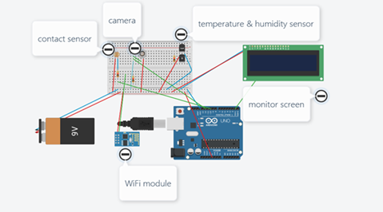

Team Project Idea
Anlen Fridge - Hardware
In assignment 1, each of the students had to propose one project each. Since we had 6 group members, the spectrum of our topic was quite various. AI, beauty, student service for RMIT students, RPG game and IoT, all of which were tempting and also required great effort to represent complete product. However, our team could not choose multiple topics, so we have discussed a lot about it. After long discussion, we have decided to work on the smart refrigerator. There were several reasons for choosing smart refrigerator. First, it covers most of topics that our teammates have chosen: AI and IoT for sure due to the feature of smart refrigerator. It is a home appliance that could interact with users using internet. Having its’ own IP address enables appliances to do many things.
At first, we were not accustomed to smart refrigerator at all. That is the reason why we tried to look for similar products that produced by huge corporation like Samsung and LG. smart refrigerator is one of the popular items among the named company since they want to attract new customers with items that are combined with IoT technology. For example, LG’s new smart refrigerator is able to take pictures though cameras attached inside of the doors and upload through the smart phone. this function is useful when customers wants to check what in the smart refrigerator even user is not with the smart refrigerator. Moreover, due to huge screen and adding more functions to refrigerator, weight of the door got much heavy compare to normal refrigerator. This is the reason why they added sensors to detect human and programmed door to automatically open. By referencing current smart refrigerator from the market, our team got that it still does not provide functions to detect shelf – life of foods inside. We could use RFID system and biometrics sensors to distinguish whether groceries in the fridge is still fresh or not. In order to test and make a prototype, the initial goal was to purchase an Arduino and attempt to demonstrate few functions. However, since IoT is kind of high edge tech, our team gave up on that plan. Since we could not make a real demo, we used a website that provides its’ users a simulation of Arduino just like the real one. Here is the circuit that we were trying to demonstrate.
